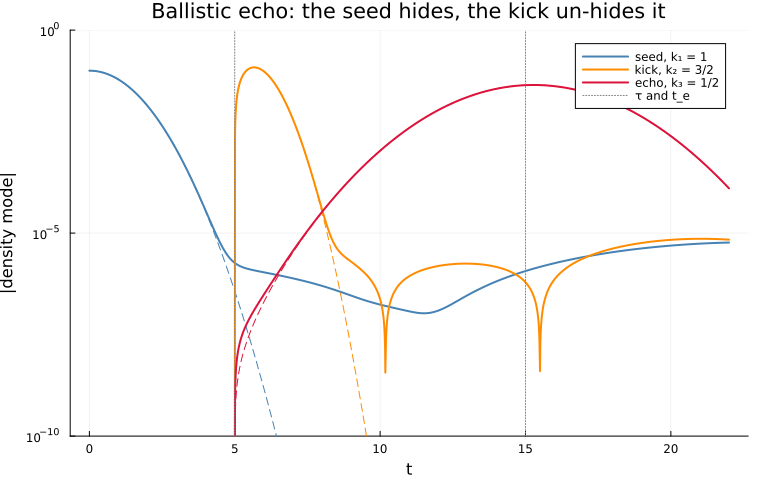
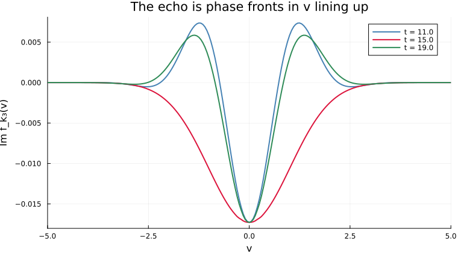
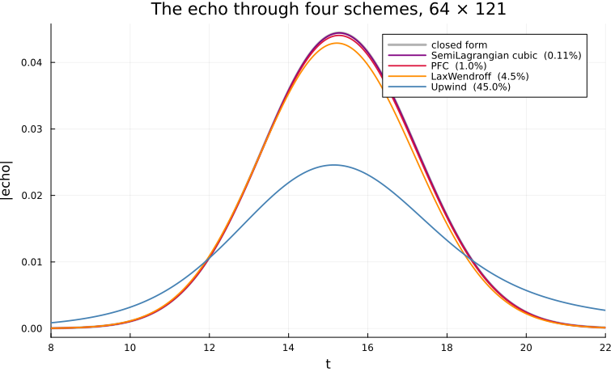
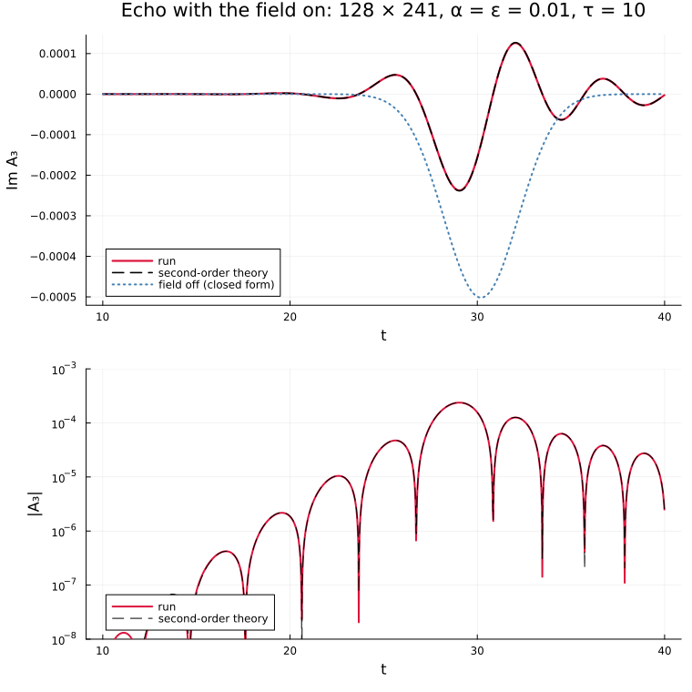

The plasma echo
Phase mixing is reversible, and a Vlasov code has to keep it so.
julia --project=verification verification/plasma-echo.jlA density perturbation in a warm plasma decays with nothing dissipated: free streaming shears it into ever finer filaments in velocity, and their integral cancels. A second perturbation, applied after the first has left every moment of f, shears against those filaments, and at a time set by the two wavenumbers alone their beat un-mixes into a density mode nobody seeded. That is the echo of Gould, O'Neil and Malmberg (1967), seen in the laboratory by Malmberg et al. (1968). Being made of information no moment can see, it is also a sharp test of a Vlasov code: whatever a scheme's numerical diffusion does to fine filaments, the echo reports – as collisions do in the experiment (Su and Oberman 1968), and as Galeotti, Califano and Pegoraro (2006) proposed using it.
Two experiments, each against theory. With the field off echo_closed_form is exact; with it on, echo_second_order composes three linear responses of the Maxwellian. The theory and both runs are in test/echo.jl and test/verification_harness.jl, and test/VlasovSolver/test_echo.jl and test/test_verification.jl assert what this script draws.
using Plots
using SpecialFunctions: besselj0, besselj1
using Vasilek
include(joinpath(pkgdir(Vasilek), "test", "verification_harness.jl"))
here = @__DIR__
floor_at(y) = max(y, 1e-12) # for the log axes: the closed forms reach 1e-20The ballistic echo, mode by mode
A seed at k₁ = 1, a kick at k₂ = 3/2 when t = τ = 5, and the echo at k₃ = 1/2 around tₑ = k₂τ/k₃ = 15.
The seed and the kick's own mode have closed forms by the same Jacobi–Anger expansion as the echo's, from the terms (m, q) = (0, 1) and (1, 0): α·J₀(k₁ε(t − τ))·exp(−k₁²t²/2) and 2|J₁(k₂ε(t − τ))|·exp(−k₂²(t − τ)²/2).
α, ε, τ = 0.1, 0.2, 5.0
pfc = f -> PFC(fmin = 0.0, fmax = maximum(f)) # bounded by the distribution it carries
ballistic = ballistic_echo(pfc, pfc; Nx = 128, Δt = 0.01, Δv = 0.05,
snapshots = (11.0, 15.0, 19.0))
k₁, k₂, k₃ = ballistic.k
t = ballistic.t
seed = [α*besselj0(k₁*ε*max(s - τ, 0.0))*exp(-(k₁*s)^2/2) for s in t]
kicked = [s ≤ τ ? 0.0 : 2*abs(besselj1(k₂*ε*(s - τ)))*exp(-(k₂*(s - τ))^2/2) for s in t]
closed = abs.(echo_closed_form.(t; α, ε, τ, k₁, k₂))
A = abs.(ballistic.modes)
i = argmax(A[:, 3])
println("ballistic echo, PFC at 128 × 241, Δt = 0.01:")
println(" seeded mode at the kick: ", round(A[ballistic.kick, 1]; sigdigits = 3),
" (closed form ", round(seed[ballistic.kick]; sigdigits = 3), ")")
println(" echo peak ", round(A[i, 3]; sigdigits = 4), " at t = ", round(t[i]; digits = 2),
", closed form ", round(maximum(closed); sigdigits = 4), " at t = ",
round(t[argmax(closed)]; digits = 2))
modes = plot(yscale = :log10, ylims = (1e-10, 1.0), xlabel = "t", ylabel = "|density mode|",
legend = :topright, size = (760, 480),
title = "Ballistic echo: the seed hides, the kick un-hides it")
for (m, label, exact, color) in ((1, "seed, k₁ = 1", seed, :steelblue),
(2, "kick, k₂ = 3/2", kicked, :darkorange),
(3, "echo, k₃ = 1/2", closed, :crimson))
plot!(modes, t, floor_at.(A[:, m]); label = label, color = color, linewidth = 2)
plot!(modes, t, floor_at.(exact); label = "", color = color, linestyle = :dash)
end
vline!(modes, [τ, k₂*τ/k₃]; color = :gray, linestyle = :dot, label = "τ and t_e")
savefig(modes, joinpath(here, "plasma-echo-modes.png"));ballistic echo, PFC at 128 × 241, Δt = 0.01:
seeded mode at the kick: 1.84e-6 (closed form 3.73e-7)
echo peak 0.04442 at t = 15.28, closed form 0.04446 at t = 15.28

What the echo is made of
The k₃ component of f along v, four time units before tₑ, at it, and four after. Before and after, it oscillates in v with wavenumber k₃t − k₂τ and its integral – the density – cancels; at tₑ the phase fronts line up, the oscillation is gone, and the integral does not cancel. The run never computes this: it is what the density moment integrates.
fronts = plot(xlabel = "v", ylabel = "Im f_k₃(v)", xlims = (-5, 5), size = (760, 420),
title = "The echo is phase fronts in v lining up")
for (snap, s, color) in zip(ballistic.snapshots, (11.0, 15.0, 19.0),
(:steelblue, :crimson, :seagreen))
Nx = length(ballistic.x)
fk = [2*sum(snap[iv, j]*cis(-k₃*ballistic.x[j]) for j in 1:Nx)/Nx
for iv in eachindex(ballistic.v)]
plot!(fronts, ballistic.v, imag.(fk); label = "t = $s", color = color, linewidth = 2)
end
savefig(fronts, joinpath(here, "plasma-echo-fronts.png"));
The same echo through four schemes
At 64 × 121, what a scheme keeps of a filament is what the echo returns. Upwind's loss is mostly its x-sweep, which diffuses each velocity row's modulation at a rate proportional to |v|, so the rows lose phase coherence and not only amplitude.
schemes = plot(xlabel = "t", ylabel = "|echo|", xlims = (8, 22), size = (760, 460),
legend = :topright, title = "The echo through four schemes, 64 × 121")
plot!(schemes, t, closed; label = "closed form", color = :black, linewidth = 3, alpha = 0.3)
println("\nfour schemes at 64 × 121, Δt = 0.02 -- pointwise error against the closed form:")
for (name, scheme, color) in (("SemiLagrangian cubic", SemiLagrangian(CubicSpline()), :purple),
("PFC", pfc, :crimson),
("LaxWendroff", LaxWendroff(), :darkorange),
("Upwind", Upwind(), :steelblue))
r = ballistic_echo(scheme, scheme)
exact = echo_closed_form.(r.t; α, ε, τ, k₁, k₂)
err = maximum(abs, r.modes[:, 3] .- exact)/maximum(abs, exact)
println(" ", rpad(name, 22), round(err; sigdigits = 3))
plot!(schemes, r.t, abs.(r.modes[:, 3]); label = "$name ($(round(100*err; sigdigits = 2))%)",
color = color, linewidth = 1.8)
end
savefig(schemes, joinpath(here, "plasma-echo-schemes.png"));
four schemes at 64 × 121, Δt = 0.02 -- pointwise error against the closed form:
SemiLagrangian cubic 0.00107
PFC 0.0103
LaxWendroff 0.0448
Upwind 0.449

With the field on
Smaller amplitudes and a later kick, for the theory's sake – see self_consistent_echo. The plasma screens the seed's filament, the kick and the echo's own density, and the echo that results is half the size of the field-free one, a time unit early, and rings afterwards at k₃'s Landau frequency. echo_second_order predicts all three.
sc = self_consistent_echo()
after = findall(>(10.0), sc.t)
ts = range(sc.t[after[1]], sc.t[after[end]]; length = length(after))
setup = (α = 0.01, ε = 0.01, τ = 10.0, k₁ = sc.k[1], k₂ = sc.k[2])
theory = echo_second_order(ts; setup...)
field_off = echo_closed_form.(ts; setup...)
measured = sc.modes[after, 3]
j = argmax(abs.(measured))
println("\nself-consistent echo, 128 × 241, Δt = 0.02:")
println(" run peak ", round(abs(measured[j]); sigdigits = 4), " at t = ", round(ts[j]; digits = 2),
"; theory ", round(maximum(abs, theory.echo); sigdigits = 4), " at t = ",
round(ts[argmax(abs.(theory.echo))]; digits = 2),
"; field off ", round(maximum(abs, field_off); sigdigits = 4), " at t = ",
round(ts[argmax(abs.(field_off))]; digits = 2))
println(" pointwise run − theory: ",
round(maximum(abs, measured .- theory.echo)/maximum(abs, theory.echo); sigdigits = 3),
" of the theory's peak")
signed = plot(ts, imag.(measured); label = "run", color = :crimson, linewidth = 2.2,
xlabel = "t", ylabel = "Im A₃", legend = :bottomleft,
title = "Echo with the field on: 128 × 241, α = ε = 0.01, τ = 10")
plot!(signed, ts, imag.(theory.echo); label = "second-order theory", color = :black,
linestyle = :dash, linewidth = 1.6)
plot!(signed, ts, imag.(field_off); label = "field off (closed form)", color = :steelblue,
linestyle = :dot, linewidth = 2)
logscale = plot(ts, floor_at.(abs.(measured)); yscale = :log10, ylims = (1e-8, 1e-3),
label = "run", color = :crimson, linewidth = 2, xlabel = "t",
ylabel = "|A₃|", legend = :bottomleft)
plot!(logscale, ts, floor_at.(abs.(theory.echo)); label = "second-order theory",
color = :black, linestyle = :dash)
savefig(plot(signed, logscale; layout = (2, 1), size = (760, 760)),
joinpath(here, "plasma-echo-self-consistent.png"));
self-consistent echo, 128 × 241, Δt = 0.02:
run peak 0.0002373 at t = 29.05; theory 0.0002385 at t = 29.05; field off 0.0005018 at t = 30.19
pointwise run − theory: 0.00484 of the theory's peak

This page was generated using Literate.jl.